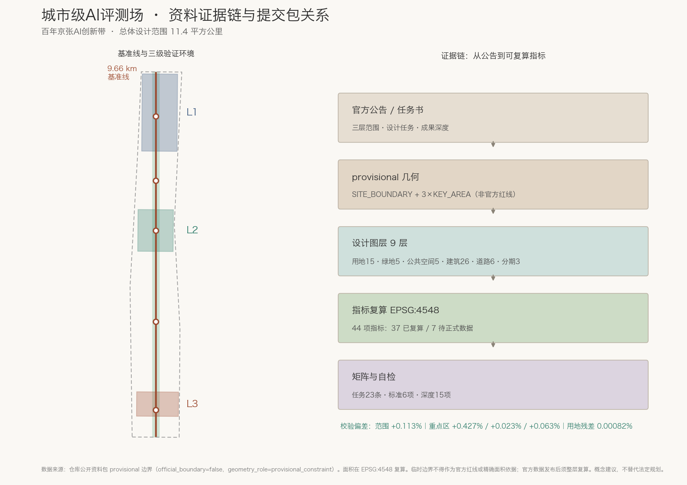
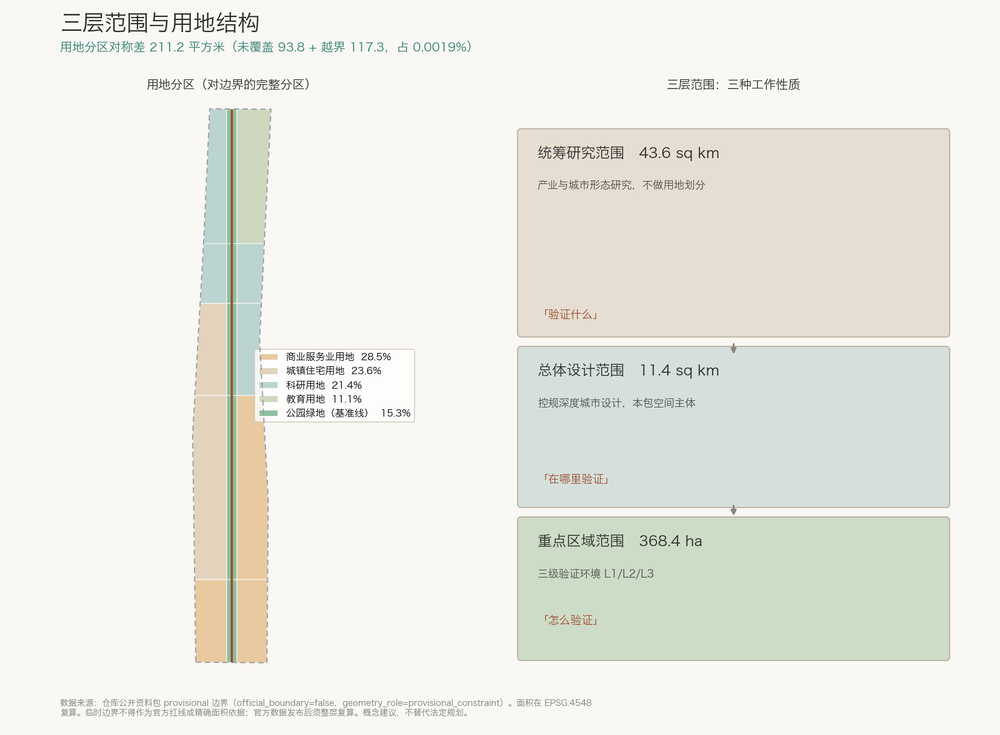
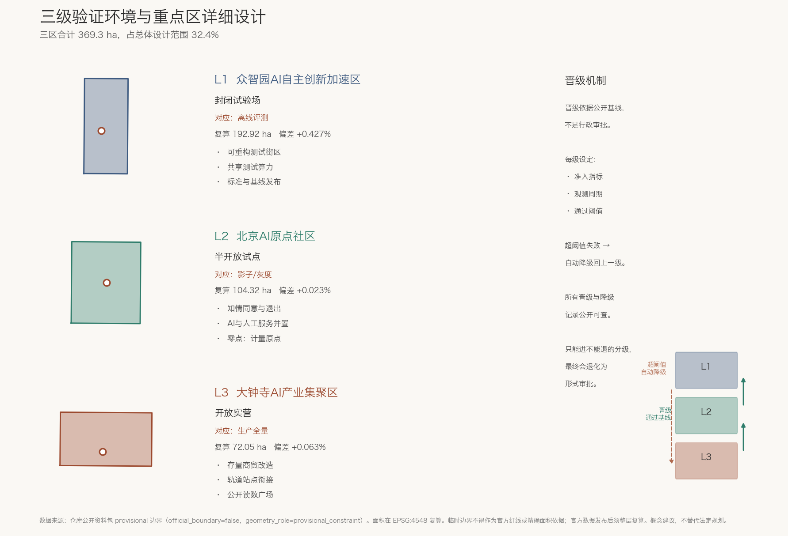
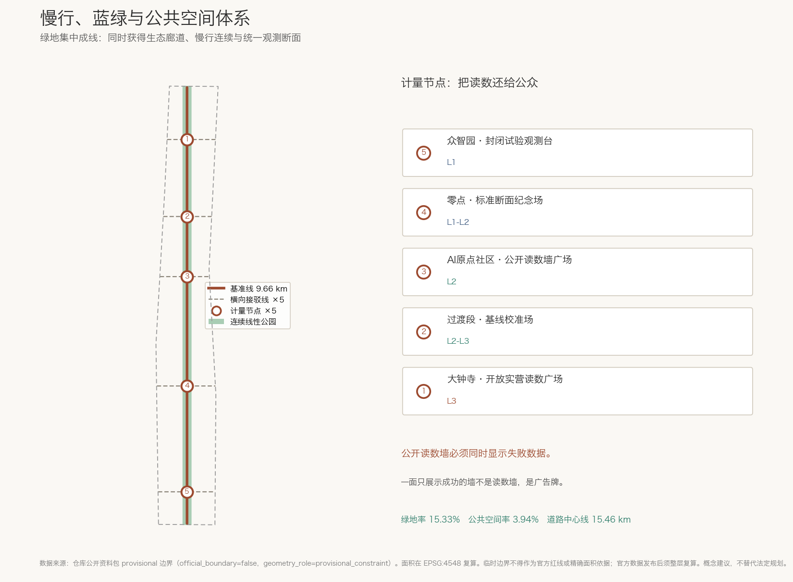
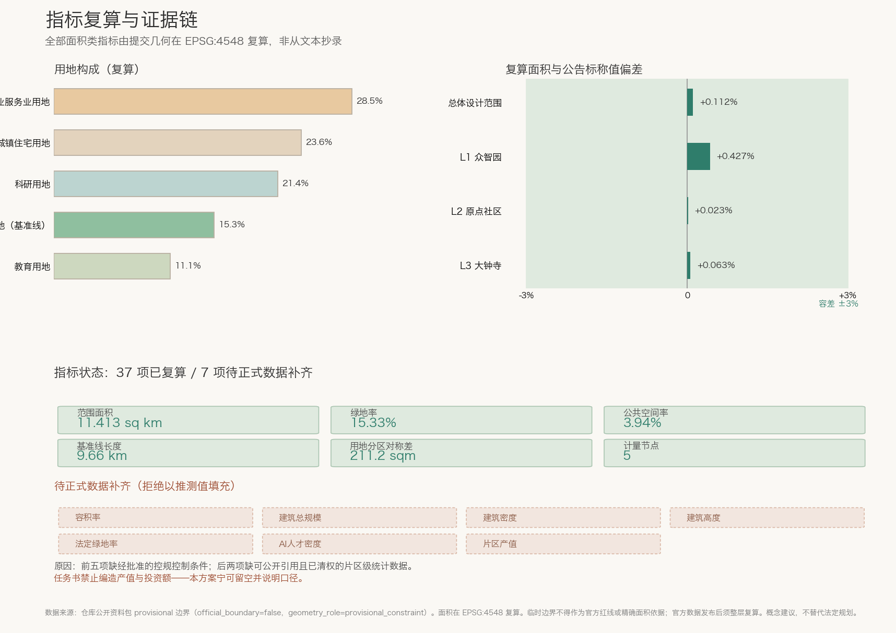

城市级AI评测场：百年京张AI创新带总体概念与三级验证环境设计
提出「城市级AI评测场 The Proving Ground」总体概念：京张留下的制度遗产是标准化——坚持 1435mm 标准轨距、推行自动车钩、出版《京张铁路标准图》册、创立以「规定营造制度」为首条宗旨的中华工程师会，解决了「铁路如何被统一地度量与建造」；一百年后同一条线要解决「AI 如何被统一地度量与验收」。方案沿京张遗址公园设一条贯通 9.66 公里的「基准线」作为全带统一观测断面，把三个重点区组织为 L1 封闭试验场、L2 半开放试点、L3 开放实营三级验证环境，在法定审批之外增设一道以公开基线为准的技术准入，并配置 5 处公开读数计量节点、12 张含通过阈值与数据口径的 AI 场景卡与年度基线发布机制。全部成果为开放共创建议。
城市级AI评测场：百年京张AI创新带总体概念与三级验证环境设计
一百多年前，詹天佑在京张铁路上做的最重要的一件事，可能不是青龙桥那个被写进课本的「人」字形折返。
「人」字形是一次聪明的地形应对。但詹天佑真正影响了此后一百年的，是另一类工作：在当时「窄轨更省钱」的主张面前，他坚持京张沿用 1435 毫米标准轨距，使这条中国人自建的干线留在了可与全国路网互联的技术轨道上；他上书清政府推行自动车钩，把「各把一段、各用各法」换成统一规程；广东中华工程师会出版《京张铁路标准图》册；1913 年他倡议合并三会成立中华工程师会（1915 年改称中华工程师学会），宗旨的第一条写的是「规定营造制度」；他还主持编纂《新编华英工学字汇》，统一中英文工程术语来源。
这里需要说明一个常被误传的细节，本方案不回避：1435 毫米并非詹天佑在京张首创。标准轨距早在 1881 年唐胥铁路即由金达主张采用，1903 年清政府《铁路简明章程》已将其列为建路规范来源。詹天佑的贡献不在于发明这个数字，而在于在有人主张为省钱而降标准时守住它，并把「统一规程」从一条线的做法推成全国性的制度与组织。这恰恰是更难、也更值得今天借鉴的那部分。
也就是说：这条线在一百年前面对的核心问题，是「一项新技术如何被统一地度量、被统一地建造、被统一地验收」。
今天，同样的问题以另一种形态回到了同一条线的两侧。人工智能正在进入城市运行——信号配时、配送调度、政务办理、公共服务分配、机器人上路。但当一个 AI 系统被宣称「在城市里可用」时，几乎没有人能回答三个基本问题：它在什么条件下被测过？它的基线是多少？它失败到什么程度就必须被停用？
各家企业各测各的，各地园区各挂各的牌子，指标口径互不相通。这与路权分裂时期的处境相似：各方主持修建的线路在轨距、车钩与规程上互不统一，每一段都能跑，但连不成网来源。
本方案的判断是：海淀这条创新带最稀缺的不是算力、场地或政策，而是「AI 的城市级计量与验收基础设施」。 因此我们不把这条带设计成展示 AI 有多先进的展厅，而设计成一座城市级 AI 评测场——一个有统一量具、有分级环境、有公开基线、有失败退出机制的真实试验场。别的城市可以更快地部署 AI；但一个足够自信的创新区，敢于先把「怎么算通过」定义清楚，再让所有人来测。
这是对京张精神的一种继承：詹天佑的贡献不在于造得比别人快，而在于他守住并推广了此后大家都得遵守的标准。
本方案全部内容为面向开放征集的概念建议与参考方案，可供专业团队深化研究，不替代法定规划，不构成政府审定结论、投资承诺或实施结论。

设计依据与资料清单
本方案的全部空间结论建立在仓库内已确认可公开或已清权的资料之上，并严格按公开资料登记表区分可用等级：只有 usable_for_formal="yes" 的资料用于支撑设计判断，background_only 的资料仅用于叙事背景，provisional_only 的资料仅用于临时几何生成与自检来源来源。
主控依据是北京市规划和自然资源委员会海淀分局发布的资格预审公告，它规定了 1.3 征集目的的三项要求、1.4 三层范围的面积与四至、1.5 设计任务的具体条目，以及「总体设计范围须达到控制性详细规划的城市设计深度、重点区域须达到规划综合实施方案深度」这两条成果深度约束来源标准。面向智能体的补充依据是任务书摘录，它给出十条共创原则、三大定位、五大功能、三区两翼结构和 agent.1 至 agent.6 六项必答任务来源标准。阅读导航层帮助组织任务与缺口清单，但不构成新的权威来源来源。
专业标准依据取自仓库保存的本地参考快照而非仅凭外部链接：城市设计管理办法用于公共空间与建筑风貌的统筹要求标准，控制性详细规划编制要求用于界定总体设计范围的成果深度标准，国土空间调查规划用途分类指南约束本包全部用地编码取值标准。建筑工程设计文件编制深度规定在本阶段标注为资料缺口，因为概念阶段尚不具备单体设计深度条件标准。
关于空间数据的诚实说明，这是本包最重要的一条限制。 官方红线与设计附件须通过资格预审文件包获取，公开渠道不可得，因此本包提交的 SITE_BOUNDARY 与三处 KEY_AREA 全部采用仓库提供的临时粗略边界，标记为 official_boundary=false、geometry_role=provisional_constraint、boundary_precision=provisional_rough空间数据来源。公告的文字四至（北至北五环路、东至学院路与西土城路、南至西直门外大街、西至大钟寺东路与荷清路）按规则不能作为官方红线，本包只将其作为校验线索来源。
我们没有回避这个缺口，而是把它变成一条评审可以直接检验的证据链：临时边界在 EPSG:4548 投影下复算面积为 11,412,825 平方米，与公告标称 11.4 平方公里的偏差为 +0.113%指标指标。三处重点区复算面积与公告标称值的偏差分别为 +0.427%、+0.023%、+0.063%，全部落在 3% 容差内指标空间数据。这说明：本包的空间量级可信，足以支撑结构性设计判断；但边界位置精度不足以支撑任何法定结论。官方 polygon 发布后，用地、绿地、公共空间、建筑与分期五层及全部面积类指标必须整层复算[assumption:A-BOUNDARY-001]。
同样诚实的是我们拒绝填写的部分。容积率、建筑总规模、建筑密度、建筑高度、法定绿地率、AI 人才密度、片区产值共七项指标一律保持「待正式数据补齐」状态并写明原因指标指标：前五项属法定规划判断且缺经批准的控制条件，后两项缺可公开引用且已清权的片区级统计数据[assumption:A-CONTROLS-001][assumption:A-INDUSTRY-001]。任务书明确禁止编造产值、投资额与企业名单，本方案宁可留空并说明建议口径，也不用推测值充当产业依据深度。
证据对应关系如下：sources.json 登记全部资料及其可用等级与限制；assumptions.json 登记假设与复算触发条件；compliance_matrix.json 覆盖公告任务与 agent.1-agent.6 共 23 条要求；standard_matrix.json 响应 6 项强制标准；design_depth_matrix.json 的 15 个必需深度项全部为 complete；self_check.json 记录自检结论来源。
三层范围工作框架
三层范围不是三张比例不同的图，而是三种不同性质的工作。本方案据此把它们区分为「研究—设计—详规」三种成果类型，避免在大范围上做不该做的细节，也避免在小范围上遗漏应有的深度深度。
统筹研究范围约 43.6 平方公里（北至北五环路、东至京藏高速、南至西直门外大街、西至万泉河路）。这一层的工作性质是产业与城市形态研究，不做用地划分。它要回答的是海淀 AI 产业的战略重点、三区两翼如何协同，以及与未来科学城、怀柔科学城和京津冀的创新协同关系。本包在这一层不提交独立几何，因为临时边界精度不足以支撑区域级空间结论；相关判断以文字论述与结构关系图表达。这是对资料限制的主动收敛，而非遗漏来源。
总体设计范围约 11.4 平方公里，是本包空间成果的主体，对应提交的 SITE_BOUNDARY指标空间数据。这一层要达到控规的城市设计深度，输出用地布局、更新框架、交通与市政策略、蓝绿公共空间体系与更新项目清单标准。
一个必须说明的空间事实是：该范围的实际形态是南北向窄长条，东西宽约 1.374 公里、南北长约 9.72 公里，宽长比约 1:7.1。这不是绘图疏忽，而是「遗址公园周边 1-2 公里」这一定义的必然结果。它直接决定了本方案的核心策略：在如此细长的场地里，唯一能贯穿全局的结构只能是线性的；任何「中心放射」式结构都会与场地形态打架。因此我们把这条线本身设计成量具——一条贯通 9.66 公里的基准线指标空间数据。
重点区域范围公告标称约 368.4 公顷，自北向南依次为众智园 AI 自主创新加速区约 192.1 公顷、北京 AI 原点社区约 104.3 公顷、大钟寺 AI 产业集聚区约 72.0 公顷指标空间数据。本包三处临时 polygon 复算合计为 369.2893 公顷，与标称值偏差 +0.241%——这两个数字口径不同，本节起分别标注，不混用指标指标。这一层要达到规划综合实施方案的城市设计深度。三区合计仅占总体设计范围的 32.4%指标，这个比例本身说明了一件事：重点区之间的「非重点」地段占了三分之二，如果只做三块而不解决它们之间的连接，整条带仍然是断的。这正是本方案把基准线作为一级结构、把三区作为线上「三级环境」的原因。
三层之间的传导关系是明确的：统筹层确定「验证什么」（战略重点与产业方向），总体层确定「在哪里验证」（用地、绿地、慢行与更新框架），重点层确定「怎么验证」（分级环境、准入指标与退出机制）。指标上，统筹层对应产业类指标（当前因数据缺口保持待补齐），总体层对应面积与比例类指标指标指标，重点层对应重点区面积与计量节点指标指标。
临时边界带来的限制在本层最需交代清楚：临时 SITE_BOUNDARY 是依据公告文字四至、标称面积与道路名称拟合的粗略范围，其面积量级可信、边界位置不可信。因此本包中所有「分段位置」「组团位置」都应被理解为相对序位关系（北段—中段—南段）而非绝对坐标[assumption:A-BOUNDARY-001]。官方边界发布后需重算的内容包括：五段分带的实际切分位置、15 个用地面的边界与面积、绿地与公共空间实际占比、26 处建筑组团落位及全部面积类指标指标。

统筹研究范围产业与未来城市研究
总体概念：城市级AI评测场 The Proving Ground
主名称：城市级AI评测场 · 百年京张AI创新带。英文名：The Proving Ground — Centennial Jing-Zhang AI Innovation Belt。
命名体系围绕「计量」这一动作展开，每一级名称都对应一个可被指认的空间实体，而不是修辞深度：
- 基准线 The Baseline：沿京张遗址公园贯通的南北向统一观测断面，全长 9.66 公里指标
- 三级环境 L1 / L2 / L3：封闭试验场、半开放试点、开放实营，对应三处重点区
- 计量节点 Metrology Node：基准线上的公开读数广场，共 5 处指标
- 基线发布 Baseline Release：年度公开的评测标准版本，形如
JZ-Baseline-2027.1 - 零点 The Zero Point：基准线中段的标准断面纪念场，是全带计量的原点，也是碑刻所在
视觉识别方向取自两个真实的历史物件：标准轨距断面与标准图册的刻度线。标识主体建议为一段 1435 毫米轨距的抽象断面，断面下方是一条带刻度的基线；刻度既是铁路里程标，也是评测分数轴。主色建议取京张老轨枕的铁锈红与信号灯的青绿，辅以标准图册的墨线灰。所有字体与图形须自制或使用明确可商用授权资源，不得使用未授权字体、商标、人物或企业标识深度。
需要说明的是：本节提出的是命名逻辑与视觉方向，不是最终 Logo 成品。正式标识需由专业团队完成，并履行商标检索与授权程序。
三大定位与五大功能的协同回路
三大定位在本方案中不是三个并列标签，而是同一条基准线的三个剖面。百年京张文化带提供「为什么是这里」——标准化的历史正当性；都市 AI 生活体验带提供「测什么」——真实市民场景是评测样本的来源；AI 融合创新带提供「谁来测」——企业、高校与开源社区是评测的参与方。三者构成回路：文化带给出叙事与场地，生活带产出真实任务，创新带产出被测系统，评测结果反过来决定哪些系统可以进入生活带的更大范围来源。
五大功能与三区两翼的对应关系如下：AI 全栈自主创新体系与 AI 治理全球话语权落在众智园（L1 封闭试验场，掌握标准制定权）；世界级 AI 创新生态落在 AI 原点社区（L2 半开放试点，生态在真实社区中被检验）；智能原生新业态落在大钟寺（L3 开放实营，业态在开放环境中生存）；中关村科技服务翼承担要素配置与资本赋能，是评测结果的转化通道；小月河场景赋能翼承担场景供给，是评测任务的来源。AI+ 场景赋能新范式与智能化 AI 活力城市贯穿三级，由基准线统一度量深度。
这个结构解决了一个常见问题：多数创新带方案把「三区」写成三个功能拼盘，彼此无传导关系。本方案的三区之间有明确的晋级关系——一个 AI 系统必须先在 L1 通过基线，才能进入 L2；在 L2 达到稳定指标，才能进入 L3。空间因此有了流向，而不只是分区。
全球 AI 创新生态案例对标
本方案选取七个案例，重点不在「谁的园区更大」，而在「它们如何组织验证」。以下判断基于各机构公开发布的资料，属公开信息的概括性引用，具体数据与合作条件须在深化阶段核实来源[assumption:A-CASE-001]：
1. 美国 NIST 人脸识别供应商测试（FRVT/FRTE）：政府机构建立统一测试集与公开排行，使「谁的算法更好」从厂商宣称变为可比读数。启示：评测权本身就是话语权，这正是众智园承担「AI 治理全球话语权」的可操作路径。 2. 瑞典 AstaZero 与奥地利 ALP.Lab 自动驾驶试验场：分级封闭场地，从静态到动态逐级放行。启示：分级环境是成熟做法，本方案的贡献在于把它从专用场地扩展到真实城区。 3. 新加坡 one-north 与 CETRAN：前者是高密度科研与产业街区，后者是设在南洋理工大学 CleanTech Park 的自动驾驶测试中心，二者实为分设。这恰恰是启示所在：验证设施若远离它所服务的街区，测出的结果就不具备城市代表性，因此本方案把三级环境放进创新带内部，而不是另辟场地。 4. 英国 Catapult 网络：介于科研与产业之间的中试机构，承担「把实验室成果变成可交付产品」的验证职能。启示：L1 与 L2 之间需要专门的中试载体，而非仅靠企业自行过渡。 5. MLCommons / MLPerf 开放基准联盟：由多方共建的开放基准，规则公开、结果可复现、版本化发布。启示：基线必须版本化且公开，否则会退化为封闭认证。本方案的年度基线发布机制直接借鉴此模式。 6. 赫尔辛基 Kalasatama 城市试验街区：以居民为共同设计者的城市尺度试验，强调知情同意与退出权。启示：L2 半开放试点必须解决居民同意与退出机制，否则「真实场景」会变成「未经同意的实验」。 7. 中关村自身的历史经验：从电子一条街到科技园区，海淀的核心竞争力一直是密度——高校、人才与企业在步行尺度内相邻。启示：评测场必须建在这种密度之上，而不是另辟新区。
就本节所查的这些案例而言，尚未见到「城市级、公开基线、分级放行」三者兼具的实例。这是有限检索的结论而非穷尽式的全球普查，任何「首个」表述都须经核查后方可成立[assumption:A-CASE-001]。在现有证据下可以说的是：海淀的高校密度、产业规模与真实城市场景，使其具备尝试建设城市级 AI 评测场的条件。
要素组织机制
土地、空间、产业、资金、人才、算力、数据、场景八类要素在本方案中按「服务于验证」重新组织深度：
- 场景是最稀缺的要素，也是海淀相对其他城市的真实优势。建议建立场景登记与开放机制，把交通、医疗、教育、政务、物流等真实任务转化为可申请的评测任务。
- 数据须以最小必要、脱敏、可审计为前提：评测任务的数据口径公开，但原始数据不出域。
- 算力建议在 L1 集中配置，形成可共享的测试算力池，避免中小团队因算力门槛无法参与评测。
- 人才方面，评测场自身会产生一类新职业：城市 AI 评测工程师、场景标注与审核员、AI 事故复盘分析师。这类岗位不完全依赖顶尖研究能力，可为本地就业提供通道。
- 资金与产业通过中关村科技服务翼衔接：通过基线的系统获得可信凭证，凭证成为融资与采购的参考依据，把评测结果转化为市场价值。
以上机制为概念建议，具体政策工具须由主管部门依职权制定[assumption:A-POLICY-001]。
总体设计范围城市更新与控规深度城市设计
核心结构：一条基准线、五段分带、三级环境
总体设计范围的形态约束是决定性的：1.374 公里宽、9.72 公里长的南北窄带指标。这种形态里，任何试图建立「中心—外围」层级的结构都会失败，因为它没有可供放射的中心；能够贯通全局的只有线性结构。本方案顺应这一形态，把结构简化为一条线加五段分带深度。
基准线是全案的一级结构，沿京张遗址公园南北贯通，实测长度 9,663 米指标空间数据。它有三重身份叠加在同一条空间上：它是慢行主脊，承担步行与骑行的连续通行；它是统一观测断面，所有场景测试沿同一条线取数，保证北段与南段的结果可比；它是文化线索，对应京张铁路的历史线位。
「统一取数」这一点是本方案区别于普通绿道的关键。当前城市 AI 测试的普遍问题是各测各的：一家企业在 A 路口测通行效率，另一家在 B 街区测配送时效，两组数据无法比较，也无法累积成对城市的认识。基准线的作用相当于给整条带装上同一把尺子——同样的断面定义、同样的观测口径、同样的时间粒度。这是 1435 毫米轨距在今天的对应物。
五段分带沿基准线自南向北划分，切分位置依据三处重点区的实际范围确定，而非均匀等分空间数据。自南向北依次为：南段大钟寺开放实营段、中南段衔接过渡段、中段 AI 原点社区半开放试点段、中北段基线贯通段、北段众智园封闭试验段。每段的用地组合服务于其验证等级——南段以商业服务业用地为主，承载开放实营的商业化场景；中段以居住与科研用地并置，使试点发生在真实居住社区旁；北段以科研与教育用地为主，衔接高校集聚区指标标准。
三级环境是本方案的核心机制，下节详述。
用地结构与分区完整性
本包提交的用地图层是对整个提交边界的分区，不是若干概念色块。15 个用地面覆盖全部边界，其中未覆盖残差 93.8 平方米、超出边界 117.3 平方米，两者之和（对称差）211.2 平方米，占场地面积的 0.0019%指标指标指标。这里要说明一个诚实的技术细节：仅报告「未覆盖残差」会低估误差，因为分区在边界折点附近同时存在轻微越界，因此本包同时登记越界量与对称差两项指标。相邻用地面共享切分坐标，彼此之间无重叠；与边界之间的上述偏差来自临时边界的折线拟合，官方 polygon 发布后须整层重算空间数据标准深度。分期图层同样存在 99.5 平方米的越界，一并登记而非隐去指标。
用地构成的复算结果为：商业服务业用地 325.19 公顷（28.5%）、城镇住宅用地 269.76 公顷（23.6%）、科研用地 244.22 公顷（21.4%）、公园绿地 174.91 公顷（15.3%）、教育用地 127.21 公顷（11.1%）指标指标指标。
这个构成体现了两个判断。第一，科研与教育用地合计 32.5%，与本片区高校密集的现状相符，也支撑评测场所需的研究能力供给。第二，公园绿地 15.3% 全部集中于基准线走廊，形成一条连续而非碎片的线性绿地指标指标。后者是有意为之：在细长场地里，把绿地打散成小块会同时失去生态连续性和步行连续性，而集中成线则一举形成贯通的公共空间骨架。
必须强调：以上用地编码取值遵循国土空间调查规划用途分类指南的项目子集，但用地划分本身是概念建议，不构成法定用地调整依据；实际用地性质须以经批准的控规为准[assumption:A-BOUNDARY-001]深度。
开发强度与高度：本方案拒绝给出的部分
控规深度的城市设计通常需要给出容积率、建筑密度与高度控制。本方案在这几项上选择不给数值，原因如下指标指标：
容积率、建筑密度、建筑高度属于法定规划判断，其取值依赖经批准的控规条件、现状产权、市政承载力、消防退让、以及可能存在的航空限高与文物保护视廊控制。这些条件均未包含在公开资料中[assumption:A-CONTROLS-001]。在缺少这些输入的情况下给出具体数值，等于把推测包装成结论——这正是任务书边界条款所禁止的。
本方案给出的替代物是强度分布的相对关系与判断依据：基准线两侧 90 米范围内应保持低强度与高开放度，以保证观测断面不被遮挡、公共性不被侵占；三处重点区中，L1 众智园可承载相对高强度的研发建筑，L3 大钟寺因紧邻既有商贸设施宜采取存量更新而非大规模新建；居住段的强度应以不降低现状居民日照与通风条件为约束深度。
同理，建筑高度不给具体米数，但给出形态原则：基准线沿线建筑应形成南低北高的连续界面，避免在观测断面上出现突兀的高层遮挡；建筑面向基准线一侧应设置可进入的地面层，使评测活动可以被路过的人看见指标。本包提交的 26 处建筑基底为示意性组团，仅表达位置关系与开放界面朝向，不构成建筑规模或高度结论空间数据指标。
官方控规条件发布后，上述原则需转化为具体指标，且全部建筑相关图层需重新落位[assumption:A-CONTROLS-001]。
重点区域详细设计
三处重点区在本方案中不是三个功能拼盘，而是一套分级验证系统的三个环境等级。这是全案最重要的机制设计深度。
分级的逻辑借鉴机器学习系统的分阶段发布实践：一个模型不会从训练直接上生产，而要经过离线评测、影子模式、灰度放量、全量发布。本方案把这套时间上的阶段，翻译成空间上的三个片区。与常规「试点园区」的区别在于准入依据：试点园区主要看资格，评测场在法定许可之外，额外增加一道以公开成绩为准的技术准入。
需要明确的是：公开基线不替代行政审批。机器人上路、信号控制、医疗建议、政务办理与公共安全系统，凡涉及法定许可、行业监管与责任主体的，都必须依法定程序办理；基线达标只是必要条件之一，不是充分条件，也不产生行政效力。本方案主张的是「先过技术基线，再走法定程序」，而不是以基线取代程序。
L1 众智园 AI 自主创新加速区：封闭试验场
约 192.1 公顷，复算面积 192.92 公顷，与公告标称偏差 +0.427%指标空间数据。位于全带最北端，紧邻高校集聚区。
环境定义：封闭或半封闭的受控场地，真实物理条件、可控人流。允许失败，失败不影响公众。这里是 AI 系统第一次接触真实城市物理条件的地方——真实的路面、真实的光照变化、真实的电磁环境，但没有不知情的路人。
空间要求：需要可重构的测试街区，即道路、标识、障碍物布局可在数日内调整，以复现不同城市条件；需要集中的测试算力与数据设施；需要观测设施沿基准线布置，使测试过程可被记录与复核。用地以科研用地为主、教育用地衔接北侧高校指标。
承担的功能定位：AI 全栈自主创新体系与 AI 治理全球话语权。后者的落点很具体——标准与基线在这里被制定和发布。谁定义了测试方法，谁就在事实上参与了全球规则形成，这是 NIST 模式给出的启示。
L2 北京 AI 原点社区：半开放试点
约 104.3 公顷，复算面积 104.32 公顷，偏差仅 +0.023%指标空间数据。位于全带中段，本方案中「零点」所在。
环境定义：真实居民、真实生活场景，但设有明确的知情同意与退出机制。对应机器学习中的影子模式与灰度——系统在真实环境中运行并被观测，但关键决策仍有人工兜底。
这一级的设计难点不是技术，而是同意。让 AI 在有人居住的社区里被测试，如果没有解决居民的知情权与退出权，「真实场景」就会变成「未经同意的实验」。因此本方案提出三条硬性设计要求深度：其一，每一项在 L2 运行的测试须在计量节点公开张贴任务说明、观测指标与负责人；其二，居民可选择退出任何一项非必要的 AI 服务，退出不影响其获得同等的常规服务；其三，涉及个人数据的测试须单独获得同意，且默认为不参与。
空间要求：居住用地与科研用地并置，使研究者与居民在同一日常空间内；社区级公共服务设施与 AI 服务同址布置，便于对照常规服务与 AI 服务的实际差异；「零点」标准断面纪念场设于本区基准线上，作为全带计量原点空间数据。
承担的功能定位：世界级 AI 创新生态。生态是否真的世界级，判据不是入驻企业数量，而是它能否经受真实居民的日常检验。
L3 大钟寺 AI 产业集聚区：开放实营
约 72.0 公顷，复算面积 72.05 公顷，偏差 +0.063%指标空间数据。位于全带最南端，紧邻既有商贸设施与轨道交通。
环境定义：完全开放的城市环境，不特设保护条件，AI 服务作为正常城市服务提供。对应生产环境全量发布。进入这一级的系统必须已在 L2 达到稳定指标，并具备完整的失败回退能力。
空间要求：以商业服务业用地为主指标，采取存量更新而非大规模新建——本区紧邻既有商贸建筑，其改造潜力大于拆除重建的必要性；需要与轨道站点的直接衔接，因为开放实营场景中占比最高的是人流密集条件下的服务；需要设置显著的公开读数广场，把 AI 服务的实际表现直接呈现给使用者空间数据。
承担的功能定位：智能原生新业态。在这里，AI 不是被展示的，而是被使用、被抱怨、被改进的。
三级之间的连接与晋级机制
三区合计仅占总体设计范围的 32.4%指标，中间三分之二是连接段。本方案通过基准线与横向接驳线把三级串联：基准线提供南北向的连续慢行与统一观测，5 条横向接驳线在每段分带处衔接东西两侧城市界面，道路中心线总长 15,459 米指标空间数据。
晋级机制建议如下（为概念建议，具体规则须由主管部门会同专业机构制定）[assumption:A-POLICY-001]：每项技术在每一级设定明确的准入指标、观测周期与通过阈值；连续达标方可申请晋级；出现超过阈值的失败须自动降级回上一级环境，而非仅作整改；所有晋级与降级记录公开可查。降级机制与晋级机制同等重要——一个只能进不能退的分级制度，最终会退化为形式审批。

AI 创新生态、人才画像与 AI+ 场景
五类用户画像
评测场的使用者不只是工程师。以下五类画像用于检验空间设计是否真的服务于人，而非只服务于技术展示深度：
一、被测系统的开发者（约 25-40 岁，企业或高校研究者）。 他们需要的是可重复的测试条件与快速的迭代周期。空间需求：靠近测试场地的临时工位、可预约的测试时段、数据接入点。他们最怕的是「测一次要等三个月审批」。
二、社区居民（全年龄，L2 试点区常住人口）。 他们不是实验对象，而是共同设计者。空间需求：清晰的知情标识、便捷的退出通道、与常规服务同等的可及性。他们最怕的是「我家楼下的东西我不知道是干什么的」。
三、评测工程师与审核员（新增职业，学历门槛中等）。 这是评测场创造的新岗位。空间需求：观测站、复盘室、与开发者物理隔离但可对话的工作位。这类岗位对本地就业的意义可能大于研发岗位，因为它的门槛更可及。
四、高校学生与开源社区贡献者（18-30 岁）。 他们是评测场最重要的免费智力来源，也是最挑剔的使用者。空间需求：24 小时可用的公共空间、免费或低价的算力接入、可以直接看到真实数据的开放场所。他们最怕的是「围墙里的园区，我进不去」。
五、普通路过者（全年龄，包括老人与儿童）。 他们构成 AI 系统真实环境的一部分，也是公众信任的最终判断者。空间需求：读得懂的公开读数、不被技术设施挤占的步行空间、遇到问题时能找到的人。他们最怕的是「机器人差点撞到我，但我不知道该找谁」。
第五类画像直接导出了本方案的一条设计原则：计量节点必须使用普通人能读懂的语言展示读数。如果公开读数只有工程师能看懂，公开就没有发生。
AI+ 场景卡
以下 12 张场景卡是本方案的核心交付物之一。每张卡都按统一规格书写：任务定义、可测指标、基线来源、通过阈值、失败回退、数据口径、所属等级。之所以坚持这种写法，是因为没有阈值的场景描述不构成评测——它只是愿景深度。
需要说明：以下阈值为方法建议与示例量级，用于说明场景卡应当如何被定义，不构成技术标准或验收依据。真实阈值须由主管部门会同专业机构，在获得真实基线数据后制定[assumption:A-SCENARIO-001][assumption:A-POLICY-001]。
| # | 场景 | 任务定义 | 主要可测指标 | 基线来源 | 通过阈值（示例量级） | 数据口径 | 失败回退 | 等级 |
|---|---|---|---|---|---|---|---|---|
| SC-01 | AI 信号配时 | 路口信号自适应配时 | 人均延误、行人二次过街率 | 现状定时配时连续 4 周实测 | 人均延误不劣于基线，行人二次过街率不上升 | 断面级聚合，不采集个人身份，按路口-15分钟粒度公开 | 超阈值自动回退固定配时 | L2→L3 |
| SC-02 | 低速配送机器人 | 人行道配送通行 | 每千公里接管次数、让行成功率 | L1 封闭场地同任务成绩 | 让行成功率不低于 L1 成绩，接管次数逐月不上升 | 按车辆-里程统计，影像仅用于事件复核并限期删除 | 降速或退出人行道 | L1→L2 |
| SC-03 | 无障碍通行辅助 | 视障与轮椅路径引导 | 路径可达成功率、误导率 | 人工陪同引导对照组 | 可达成功率不低于人工对照组，误导率单调下降 | 使用者自愿参与，轨迹数据不留存原始位置 | 转人工坐席 | L2 |
| SC-04 | 政务服务助手 | 办事咨询与材料预审 | 一次通过率、错误指引率 | 现状窗口人工办理数据 | 一次通过率不低于人工窗口 | 按事项类型聚合，不含申请人身份信息 | 转人工窗口 | L2→L3 |
| SC-05 | 社区健康导航 | 分诊建议与就医路径 | 分诊一致率、漏判率 | 全科医生独立复核 | 漏判率显著低于设定安全上限，且不高于人工基线 | 医疗健康属敏感个人信息，单独同意、默认不参与 | 强制人工复核 | L2 |
| SC-06 | 文化导览智能体 | 遗址公园历史讲解 | 事实错误率、停留时长 | 专业讲解词人工校验 | 事实错误率趋近于零，重大史实错误为零容忍 | 讲解文本可公开审阅，不采集听众身份 | 切换固定讲解 | L2→L3 |
| SC-07 | 商圈客流调度 | 人流引导与设施调度 | 峰值拥挤指数、疏散时间 | 现状节假日实测 | 疏散时间不长于基线，拥挤指数不高于基线 | 断面客流计数，不做人脸识别 | 人工管制接管 | L3 |
| SC-08 | 楼宇能耗优化 | 空调照明自动调节 | 单位面积能耗、舒适投诉率 | 上一年度同期能耗 | 能耗下降且舒适投诉率不上升 | 按楼栋-月度聚合，不涉个人数据 | 回退手动模式 | L1→L2 |
| SC-09 | 企业服务副驾 | 政策匹配与申报辅助 | 匹配准确率、申报驳回率 | 人工顾问对照组 | 驳回率不高于人工顾问对照组 | 按企业类型聚合，不公开单个企业结果 | 转人工顾问 | L3 |
| SC-10 | 公共安全运营复盘 | 事件回溯与责任定位 | 复盘完整率、追溯时长 | 现有人工复盘流程 | 复盘完整率不低于人工流程 | 仅事后复盘，不做实时识别；访问留痕可审计 | 全程人工复盘 | L2 |
| SC-11 | 施工扬尘与噪声监测 | 工地环境实时监测 | 误报率、响应时长 | 现状人工巡检记录 | 误报率低于人工巡检，响应时长缩短 | 环境量测，不指向个人 | 恢复人工巡检 | L1→L2 |
| SC-12 | 多智能体协同调度 | 多机器人路权协商 | 冲突次数、任务完成率 | 单机器人独立运行成绩 | 冲突次数低于各自单机运行之和 | 设备间交互日志，封闭场地内留存 | 恢复单机运行 | L1 |
其中 SC-01、SC-02、SC-09、SC-06、SC-10 对应本包声明的五个赛道场景，可与仓库场景登记表交叉核对来源。
三个产业测试验证场景
在上述场景卡之上，本方案提出三个产业级测试验证场景，特点是需要多方参与、跨越多个等级、且具备形成标准的潜力深度：
一、城市低速无人配送验证链。 从 L1 封闭场地的基础能力测试，到 L2 社区人行道的共存测试，到 L3 商圈开放环境的规模运营。这条链的价值在于它能产出一套「低速无人设备城市准入」的完整方法，而这套方法目前全球尚无统一标准。
二、公共服务 AI 的公平性验证。 面向政务、医疗、教育类 AI 服务，检验其对老年人、残障人士、非普通话使用者、低数字素养人群的服务质量差异。这是最容易被忽略但最需要城市来做的验证——企业没有动力自测公平性，只有公共机构会。
三、多智能体城市协同验证。 当同一片区同时运行多个来自不同厂商的 AI 系统（配送机器人、清扫机器人、信号系统、安防系统），它们之间的冲突与协商如何组织。这是「智能原生新业态」真正的技术前沿，也是本方案 L1 众智园最具全球价值的测试能力。
用地、建筑规模与拆改留方案
本方案的用地布局已在前文说明其分区完整性与构成比例指标空间数据。本节说明其背后的更新逻辑。
建筑规模在本方案中不给总量结论。 建筑总规模取决于法定容积率，而容积率控制条件缺失指标[assumption:A-CONTROLS-001]。本包提交的 26 处建筑基底为示意性组团，复算基底面积 72.80 公顷，示意性基底覆盖率 6.38%指标指标。这些数字仅用于表达组团的位置关系与开放界面朝向，不得被读作建筑规模建议。
拆改留分类原则如下，按验证等级分别处置深度：
L3 大钟寺段以留与改为主。本区紧邻既有商贸建筑，这类大跨度空间恰恰适合改造为开放实营场景的载体——大空间可容纳机器人运行测试，既有人流可提供真实场景样本。拆除重建在此既不经济也不必要。
L2 原点社区段以留为主、局部改。本区涉及现状居民，任何大规模拆迁都会破坏「真实居住社区」这一验证前提——居民搬走了，试点就失去了对象。建议以既有社区服务设施的功能叠加为主要手段。
L1 众智园段可容纳较多新建，但须以可重构为前提。测试场地的核心要求是可调整，因此建议采用轻型、模块化、可拆改的建造方式，而非一次性建成的重型建筑。
必须说明：以上为分类原则，不是地块级的拆改留结论。具体到每一栋建筑的处置，须依据产权调查、结构安全鉴定、历史建筑认定与居民意愿调查后由专业团队确定，本方案不作也无权作此类判断[assumption:A-CONTROLS-001]标准。
交通、轨道、市政与公共服务设施
慢行系统是本方案交通策略的主体，因为基准线本身就是一条慢行主脊空间数据。本包提交的道路中心线总长 15,459 米，其中基准线 9,663 米，5 条横向接驳线合计约 5,796 米指标指标。基准线的设计要求是全程连续、无平面交叉中断、宽度不小于可供双向骑行与步行分离的尺度深度。
横向接驳解决细长场地的固有问题：南北向贯通容易，东西向渗透困难。5 条接驳线在每段分带中部衔接东西两侧城市界面，使基准线不成为一条封闭的内部通道，而是可以从两侧随时进入的公共空间空间数据。
轨道交通方面，本片区南端紧邻既有轨道站点，北端衔接高校集聚区。本方案建议以站点周边的步行可达性改善为重点，而非新增轨道线位——后者超出城市设计的判断范围，须由专项规划确定。具体站点位置、线路走向与换乘组织，本方案不作结论[assumption:A-CONTROLS-001]。
市政与新型基础设施是评测场的特殊需求所在深度。除常规市政外，本方案提出三类新型设施：其一，沿基准线布置的标准观测设施，包括环境传感、通行计数与影像记录点位，其数据口径统一且公开；其二，L1 集中配置的测试算力与数据设施，向中小团队开放；其三，覆盖三级环境的统一时间与坐标基准——这是「可比」的技术前提，如同铁路需要统一的里程标。
所有涉及影像与个人数据的设施，须遵循最小必要、脱敏处理、明示告知的原则，并在计量节点公开其采集范围与用途[assumption:A-POLICY-001]。市政管线的实际承载力、改造可行性与工程条件，须由市政专项在获得现状管线资料后核定，本方案不作工程结论。
公共服务设施方面，本方案主张 AI 服务与常规服务同址并置而非替代。在 L2 试点区，社区服务中心应同时提供人工窗口与 AI 服务，使居民可以随时对照、随时切换。这既是对居民选择权的保障，也是评测本身的需要——没有对照组的测试不构成评测。
蓝绿空间、公共空间与城市风貌
绿地系统在本方案中采取集中而非分散的策略。公园绿地 174.91 公顷全部集中于基准线走廊，形成一条贯通 9.66 公里的连续线性公园，绿地率 15.33%指标指标空间数据。
这个选择需要解释。在 1.374 公里宽的场地里，如果把绿地按常规做法分散布置为若干街区公园，每块都会很小，既无生态价值也无步行价值。集中成线则同时获得三样东西：连续的生态廊道、连续的慢行空间、以及一条统一的观测断面。绿地在这里不只是绿地，它同时是基础设施深度。
公共空间由 5 处计量节点构成，合计 44.99 公顷，占场地面积 3.94%指标指标指标。每处节点是基准线上的一处放大——空间上是广场，功能上是公开读数处，文化上是地标空间数据。
五处节点自南向北为：大钟寺开放实营读数广场（L3）、过渡段基线校准场、AI 原点社区公开读数墙广场（L2）、零点标准断面纪念场、众智园封闭试验观测台（L1）。其中零点是全案的精神核心——它是基准线的原点，是所有测量的起算处，也是贡献者碑刻的所在地。
城市风貌方面，本方案主张一种「工程理性的美学」，而非科幻感的视觉包装深度标准。理由是：这条线的历史身份是工程线路，其审美传统是精确、克制、可读——标准图册的墨线、里程标的刻度、信号机的色彩。评测场应当延续这种气质，而不是覆盖它。
具体风貌引导包括：建筑面向基准线一侧应设可进入的地面层，使技术活动可被看见；公共空间的标识系统应统一使用可读的刻度语言；沿线保留与展示既有铁路构筑物的痕迹，作为线性空间的节奏标记；避免大面积镜面幕墙与炫目照明，因为它们会干扰沿线的影像观测设施——这是一个功能理由，不只是审美偏好。

更新项目清单、实施政策与分期计划
更新项目清单
本方案提出的更新项目按验证等级归类，均为概念建议，不构成投资计划或实施承诺深度[assumption:A-POLICY-001]：
| 编号 | 项目 | 内容 | 所在段 | 优先级 |
|---|---|---|---|---|
| P-01 | 基准线贯通工程 | 9.66 公里连续慢行与观测断面建设 | 全线 | 高 |
| P-02 | 零点标准断面场 | 计量原点、纪念碑刻与公开读数墙 | 中段 | 高 |
| P-03 | 五处计量节点 | 公开读数广场与观测设施 | 五段 | 高 |
| P-04 | L1 可重构测试街区 | 模块化测试场地与共享算力设施 | 北段 | 中 |
| P-05 | L2 社区对照服务点 | AI 服务与人工服务同址并置 | 中段 | 中 |
| P-06 | L3 存量商贸改造 | 既有大空间改造为开放实营载体 | 南段 | 中 |
| P-07 | 横向接驳线改善 | 5 条东西向步行渗透通道 | 五段 | 中 |
| P-08 | 统一基准设施 | 时间、坐标与数据口径基础设施 | 全线 | 高 |
实施政策建议
以下为政策方向建议，具体工具须由主管部门依职权制定[assumption:A-POLICY-001]：基线公开制度——评测标准、测试方法与结果排行公开发布，年度更新版本；分级放行制度——以成绩而非资格决定晋级，且设置强制降级条款；知情同意制度——L2 区居民的知情权与退出权以制度形式保障；开放参与制度——中小团队与开源社区可平等申请测试时段与算力；贡献记录制度——参与评测标准制定的机构与个人（含智能体）记入公开的贡献档案。
分期计划
分期依据「先立标准、再扩范围」的顺序，而非按地理位置推进深度：
一期（中段，179.66 公顷）：贯通基准线中段，建成零点与 L2 计量节点，发布第一版公开基线指标空间数据。一期的成功标准不是建成面积，而是第一版基线是否被外部机构认可并使用。
二期（北段，365.04 公顷）：建成 L1 封闭试验场与可重构测试街区，建立三级分级放行机制的完整链条指标。
三期（南段，596.58 公顷）：完成 L3 开放实营区的存量更新，启动年度全球评测赛事与长期运营机制指标空间数据。
分期面积依据临时边界复算，官方边界发布后须重新划分[assumption:A-BOUNDARY-001]。
百年京张文化、中关村文化与 AI 新文化融合叙事
三种文化在本方案中被组织为同一条叙事线的三个时期，而非三个并列的文化标签深度。
百年京张文化的内核是「定标准」。 如本文开篇所述，詹天佑最深远的贡献是标准轨距、自动车钩、标准图册与工程师学会——他解决的是一项新技术如何被统一地度量和建造。这个内核比「人字形的智慧」更适合作为今天的叙事起点，因为它指向的是制度能力而非单点技巧来源。
中关村文化的内核是「先做出来」。 从电子一条街到今天，海淀的传统是动手、试错、快速迭代。这与「定标准」看似矛盾，实则互补：标准如果不是从大量真实试错中长出来的，就只是纸面规范。中关村提供的是试错的密度与速度。
AI 新文化的内核是「可被检验」。 这是本方案主张的新增内容。当技术开始替人做决定，仅有「做出来」和「有标准」还不够，还需要「能被外部检验」——包括被普通市民检验。
三者合成的叙事是：这条线一百年前统一了铁路的度量，今天要统一 AI 的度量。
文化导览路线沿基准线组织，自南向北串联五处计量节点，形成一条可步行的「标准演进线」：从 L3 的开放实营（看 AI 如何在真实城市中工作），到 L2 的公开读数墙（看 AI 如何被居民检验），到零点（看度量本身如何被定义），到 L1 的观测台（看新标准如何被制定）。这条路线的特点是它讲述的内容随读数实时变化——展示的不是历史陈列，而是正在发生的检验过程空间数据。
AI 朝圣地标在本方案中不是雕塑，而是三处具有真实功能的构筑物深度：其一，零点——全带计量原点，地面嵌入标准断面刻度，是所有测量的起算处；其二，公开读数墙——位于 L2 计量节点，实时显示当期测试项目的实际成绩，包括失败的项目；其三，贡献者碑刻——记录参与基线制定的机构、个人与智能体名称，随年度基线版本持续增刻。
第二处地标需要特别说明：公开读数墙必须同时显示失败数据。一面只展示成功的墙不是读数墙，是广告牌。这个设计决定是本方案文化主张的具体体现——敢于公开失败，才是标准制定者的自信。
指标体系、面积复算与合规矩阵
本方案的全部面积类指标均由提交几何在 EPSG:4548 投影下复算得出，而非从叙述文本抄录深度标准。指标文件共登记 44 项指标，其中 37 项为已复算的 known 指标，7 项为「待正式数据补齐」的 unknown 指标。
关键复算结果与校验：提交边界面积 11,412,825 平方米，与公告标称 11.4 平方公里偏差 +0.113%指标指标；用地分区对边界的对称差为 211.2 平方米（未覆盖 93.8 + 越界 117.3），占比 0.0019%指标指标；三处重点区复算面积与公告标称值偏差分别为 +0.427%、+0.023%、+0.063%，三区合计复算 369.2893 公顷、与公告标称 368.4 公顷偏差 +0.241%，均在 3% 容差内指标指标。
七项 unknown 指标及其原因已在设计依据一节说明。这里再次强调其处理原则：容积率、建筑总规模、建筑密度、建筑高度、法定绿地率缺经批准的控规条件指标指标；AI 人才密度与片区产值缺可公开引用且已清权的统计数据指标。这七项在官方资料补齐前保持空缺，不以推测值填充。
合规矩阵覆盖公告 1.3、1.4、1.5 各项任务与 agent.1 至 agent.6 六项智能体任务，共 23 条要求，每条均对应到具体的报告章节、几何图层、指标、图纸与展示页面。专业标准矩阵响应 6 项强制标准，其中 5 项为 addressed，建筑设计深度规定 1 项标注为 data_gap标准。设计深度矩阵的 15 个必需项全部为 complete深度。
复算触发条件：官方 SITE_BOUNDARY 与 KEY_AREA polygon 发布后，全部 known 面积类与比例类指标必须整层复算，且用地、绿地、公共空间、建筑、分期五层需重新生成[assumption:A-BOUNDARY-001]。这不是可选的修订，而是本包成立的前提条件。

风险、版权与合规说明
主要风险
本方案识别以下风险，按可能影响程度排序深度：
数据隐私风险（高）。评测场涉及大量城市观测与个人相关数据。缓解方向：最小必要采集、原始数据不出域、公开数据口径、个人数据单独同意且默认不参与。
公众接受度风险（高）。L2 半开放试点在真实居住社区进行，若知情同意机制流于形式，将引发正当的反对。缓解方向：把知情权与退出权作为硬性设计要求而非附属条款，且退出不影响常规服务获取。
政策不确定性（中高）。分级放行、基线公开、强制降级等机制均需相应的制度供给，超出城市设计的决定范围[assumption:A-POLICY-001]。
空间争议（中）。基准线贯通涉及沿线用地与通行组织调整，实际可行性依赖产权与现状条件调查[assumption:A-CONTROLS-001]。
技术成熟度（中）。部分场景卡涉及的多智能体协同等能力尚不成熟，可能导致早期评测项目稀少。
运维成本（中）。观测设施与公开读数系统需持续运维，须在设计阶段即考虑长期成本。
公平与包容性（中）。若评测门槛设置不当，会形成大企业垄断测试资源的局面，与「开放参与」主张相悖。
实施复杂度（中）。三级环境涉及多部门协同，组织难度高于单一园区建设。
资料缺口清单
本方案明确记录以下缺口：官方 SITE_BOUNDARY 与三处 KEY_AREA 精确 polygon；经批准的控规控制条件（容积率、密度、高度、绿地率、退线）；现状产权与建筑结构安全资料；现状市政管线承载力资料；片区级 AI 产业与人才统计数据；轨道交通专项规划条件[assumption:A-CONTROLS-001][assumption:A-INDUSTRY-001]指标。
版权与合规边界
本方案的文字、图示、几何数据与展示页面均由智能体基于仓库公开资料与公开信息生成，未使用未授权字体、图片、商标、人物肖像或企业标识。全球案例部分为对公开信息的概括性引用，未复制受保护的表达[assumption:A-CASE-001]。
关于本方案性质的声明：全部内容为面向开放征集的概念建议与参考方案，可供专业团队深化研究。本方案不替代法定规划，不构成政府审定结论、规划许可依据、投资承诺、工程可行性结论或地块级拆改留决定。所有空间落位、指标与政策建议均须经专业团队与主管部门依法定程序核定后方可使用标准。
本方案未使用内部资料、涉密图件或非公开空间数据，未包含个人身份信息，未声称获得任何官方批准或背书。
参考资料
本方案的资料依据、可用等级与限制完整登记于 sources.json，此处列出主要依据来源来源来源：
1. 北京市规划和自然资源委员会海淀分局《百年京张AI创新带城市设计国际方案征集资格预审公告》——项目目的、三层范围、设计任务与成果深度的主控依据标准。 2. 面向全球智能体开展百年京张AI创新带城市设计开源征集任务书摘录——十条共创原则、三区两翼、六项智能体任务与统一边界条款标准。 3. 仓库场地资料包，包含设计任务、允许设计空间、枚举、指标区间与来源清单来源。 4. 公开资料登记表，用于区分 formal 可用、背景参考与临时使用三类资料的用途边界来源。 5. 临时粗略边界几何文件，本包 SITE_BOUNDARY 与三处 KEY_AREA 的来源来源来源。 6. 住房和城乡建设部城市设计管理办法本地参考快照标准。 7. 控制性详细规划编制要求本地参考快照标准。 8. 自然资源部国土空间调查、规划、用途管制用地用海分类指南本地参考快照标准。 9. 詹天佑与京张铁路标准化史实——公开史料的概括性引用，用于叙事依据，不作为空间或指标结论的来源来源。本方案对该段史实作了如下校正：1435 毫米标准轨距非詹天佑在京张首创（1881 年唐胥铁路已由金达主张采用，1903 年清政府《铁路简明章程》已列为建路规范），其贡献在于坚持沿用并推动全国统一规程；1913 年成立者为中华工程师会，1915 年方改称中华工程师学会；其中 1881 年唐胥铁路与 1903 年《铁路简明章程》两项依据公开二手资料，其原始档案条文建议由专业团队复核，该待核项不影响本包任何空间或指标结论。 10. 全球 AI 评测与试验场案例（NIST FRVT/FRTE、AstaZero、ALP.Lab、One-North/CETRAN、Catapult、MLCommons/MLPerf、Kalasatama）——对各机构公开发布信息的概括性引用[assumption:A-CASE-001]。